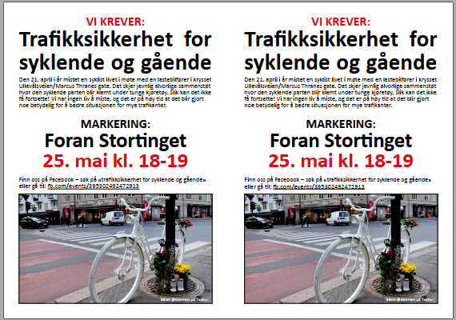
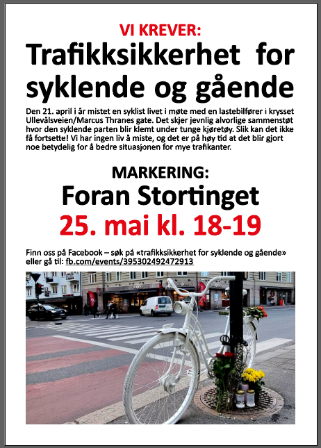
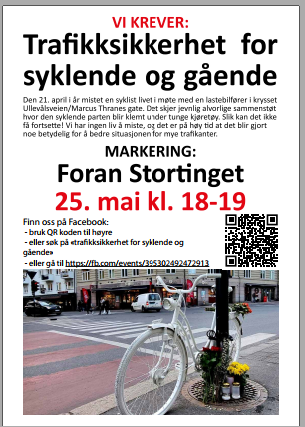

Info
Tidspunkt:
25. mai kl. 18-19
Sted:
Eidsvolls plass, foran Stortinget
Facebook event:
https://www.facebook.com/events/395302492472913
Der postes det jevnlige oppdateringer, så følg med der. Del også gjerne facebook eventet slik at så mange som mulig ser det.
Materiale
Liggende A4 side med to plakater:
Last ned PDF

Stående A4 side:
Last ned PDF

Stående A4 side med QR kode:
Last ned PDF
